信号処理 - 第11講
村田 昇
定理
信号 \(f(t)\) が \(B\,[\mathrm{Hz}]\) 未満の周波数しか含んでいないなら， \(1/2B\,[s]\) ごとのサンプル点を用いて元の信号は完全に求められる．
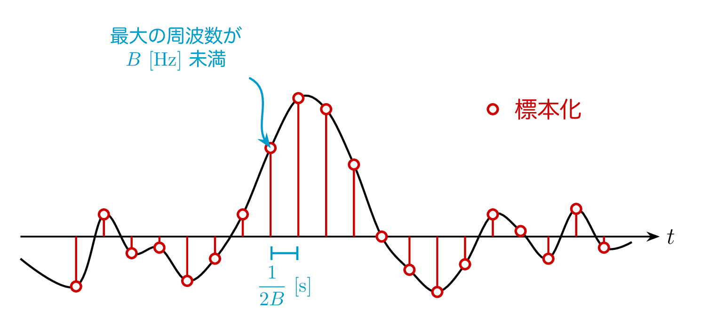
折り返しによる雑音
\(4\pi B\) 周期の関数 \(\tilde{f}\) を構成する際に重なりが生じ， 切り出した \((-2\pi B,2\pi B)\) 領域を 元に戻すことができない．
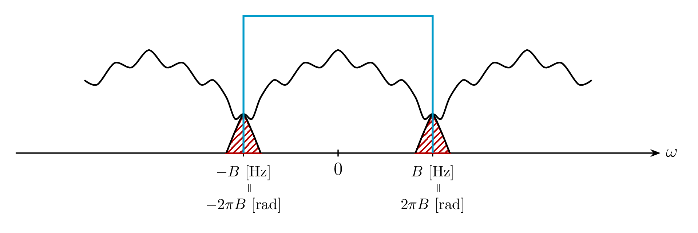
サンプリング周波数
若年者は \(20\,[\mathrm{Hz}]\) から \(20\,[\mathrm{kHz}]\) の範囲の音を聴き分けることができると言われている． テレビ会議などでこの帯域を十分に伝達するために必要なサンプリング周波数はどのようになるか答えよ．
定義
長さ \(N\) の信号 \(f(t),\;t=0,1,\dotsc,N{-}1\) の離散 Fourier 変換を以下で定義する．
\begin{equation} \hat{f}(n) =\frac{1}{\sqrt{N}}\sum_{t=0}^{N{-}1} f(t)e^{-i\frac{2\pi}{N}nt}, \quad (n=0,1,2,\dotsc,N{-}1) \end{equation}
逆変換
逆変換は以下で定義される．
\begin{equation} f(t) =\frac{1}{\sqrt{N}}\sum_{n=0}^{N{-}1} \hat{f}(n)e^{i\frac{2\pi}{N}nt}, \quad (t=0,1,2,\dotsc,N{-}1) \end{equation}
サンプリング周波数と基本周波数
サンプリング周波数 \(f_{s}\,\mathrm{[Hz]}\) のデジタル信号から 長さ \(N\) のベクトルを切り出し 離散 Fourier 変換を考えたとき， 基本周波数はいくつになるか?
周波数の正負の関係
“負”の基本周波数 \(e^{-i\frac{2\pi}{N}t}\) と 標本点 (\(t\) が整数の点)で 同じ値を持つ正の基底 \(e^{i\frac{2\pi}{N}kt}\;(k>0)\) を求めよ．
基本周波数の性質
\begin{equation} \alpha=e^{i\frac{2\pi}{N}} \end{equation}と置くと，
\begin{equation} \alpha^{N}=e^{2\pi i}=1 \quad(\text{1の\(N\)乗根の一つ}) \end{equation}となる． \(m\) を整数とするとき以下の値を求めよ．
\begin{equation} 1+\alpha^{m}+\alpha^{2m}+\dotsb+\alpha^{(N{-}1)m} \end{equation}
\(N\) 乗根を用いた展開
\(\alpha\) を用いて定義式を書き下すと
\begin{align} \hat{f}(n) &=\frac{1}{\sqrt{N}}\sum_{t=0}^{N{-}1}f(t)\alpha^{-nt}\\ &=\frac{1}{\sqrt{N}} \left( f(0)\alpha^{-n\cdot0}+f(1)\alpha^{-n\cdot1}+ f(2)\alpha^{-n\cdot2}+\right.\\ &\qquad\qquad\left.\dotsb+f(N{-}1)\alpha^{-n\cdot(N{-}1)}\right) \end{align}となる．
変換行列
\begin{equation} F = \frac{1}{\sqrt{N}} \begin{pmatrix} 1&1&1&\dots&1\\ 1&\alpha^{-1}&\alpha^{-2}&\dots&\alpha^{-(N{-}1)}\\ \vdots&&&\ddots&\vdots\\ 1&\alpha^{-(N{-}1)}&\alpha^{-2(N{-}1)}&\dots&\alpha^{-(N{-}1)(N{-}1)} \end{pmatrix} \end{equation}
行列表現
\begin{equation} \begin{pmatrix} \hat{f}(0)\\ \hat{f}(1)\\ \vdots\\ \hat{f}(N{-}1) \end{pmatrix} = F \begin{pmatrix} f(0)\\ f(1)\\ \vdots\\ f(N{-}1) \end{pmatrix} \end{equation}\begin{equation} \hat{\boldsymbol{f}} =F \boldsymbol{f} \end{equation}
逆変換行列
\begin{equation} F^{*} =\frac{1}{\sqrt{N}} \begin{pmatrix} 1&1&1&\dots&1\\ 1&\alpha^{1}&\alpha^{2}&\dots&\alpha^{(N{-}1)}\\ \vdots&&&\ddots&\vdots\\ 1&\alpha^{(N{-}1)}&\alpha^{2(N{-}1)}&\dots&\alpha^{(N{-}1)(N{-}1)} \end{pmatrix} \end{equation}
行列表現
\begin{equation} \boldsymbol{f} =F^{*} \hat{\boldsymbol{f}} \end{equation}
行列 \(F,F^{*}\) の積
\begin{multline} F^{*}F\\ =\frac{1}{N} \begin{pmatrix} 1&1&\dots&1\\ 1&\alpha^{1}&\dots&\alpha^{(N{-}1)}\\ \vdots&&\ddots&\vdots\\ 1&\alpha^{(N{-}1)}&\dots&\alpha^{(N{-}1)(N{-}1)} \end{pmatrix} \begin{pmatrix} 1&1&\dots&1\\ 1&\alpha^{-1}&\dots&\alpha^{-(N{-}1)}\\ \vdots&&\ddots&\vdots\\ 1&\alpha^{-(N{-}1)}&\dots&\alpha^{-(N{-}1)(N{-}1)} \end{pmatrix} \end{multline}
\(i\) 行 \(j\) 列成分
\begin{align} (F^{*}F)_{ij} &=\frac{1}{N} \begin{pmatrix} 1&\alpha^{(i-1)}&\dots&\alpha^{(N{-}1)(i-1)} \end{pmatrix} \begin{pmatrix} 1\\ \alpha^{-(j-1)}\\ \vdots\\ \alpha^{-(N{-}1)(j-1)} \end{pmatrix}\\ &=\frac{1}{N} \left( 1+\alpha^{(i-j)}+\alpha^{2(i-j)}+ \dots+\alpha^{(N{-}1)(i-j)} \right)\\ &= \begin{cases} 1,&i=j\\ \frac{1}{N}\frac{1-\alpha^{N(i-j)}}{1-\alpha^{(i-j)}},&i\not=j \end{cases} = \begin{cases} 1,&i=j\\ 0,&i\not=j \end{cases} \end{align}
逆も同様
\begin{equation} (FF^{*})_{ij} =\begin{cases} 1,&i=j\\ 0,&i\not=j \end{cases} \end{equation}
変換は可逆となる
\begin{equation} F^{*}\boldsymbol{\hat{f}} = F^{*}F\boldsymbol{f} =\boldsymbol{f} \end{equation}\begin{equation} F\boldsymbol{f} = FF^{*}\boldsymbol{\hat{f}} =\boldsymbol{\hat{f}} \end{equation}
定義
入力 \(f(t)\) を変換して出力 \(g(t)\) を生成する機構
線形性
入力の線形結合がそのまま出力に反映される性質
時不変性
入力の時刻がずれた場合，出力も同じだけずれる性質
標本化されたフィルタの表現
\begin{equation} g(t)=\sum_{s=t-N+1}^{t}f(s)h(t{-}s) \end{equation}
周期関数の畳み込みによる表現
\begin{align} g(t) &=f{*}h(t)\\ &=\sum_{s=0}^{N-1}f(s)h(t{-}s) =\sum_{s=0}^{N-1}f(t{-}s)h(s),\\ &\quad t=0,1,\dotsc,N-1 \end{align}
離散 Fourier 変換によるフィルタの表現
\(f,g,h\) を長さ \(N\) のベクトルと考え， \(g\) の離散 Fourier 変換を \(f,h\) の離散 Fourier 変換で表しなさい．
\begin{equation} g(t)=\sum_{s=0}^{N-1}f(s)h(t{-}s), \quad t=0,1,\dotsc,N-1 \end{equation}
信号の切り出し
\begin{equation} f(t)=w(t)\tilde{f}(t) \end{equation}
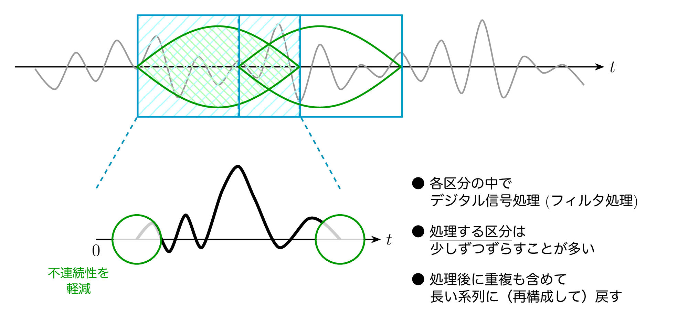
\begin{equation} w(\tau)=\Xi_{(0,1)}(\tau) \end{equation}
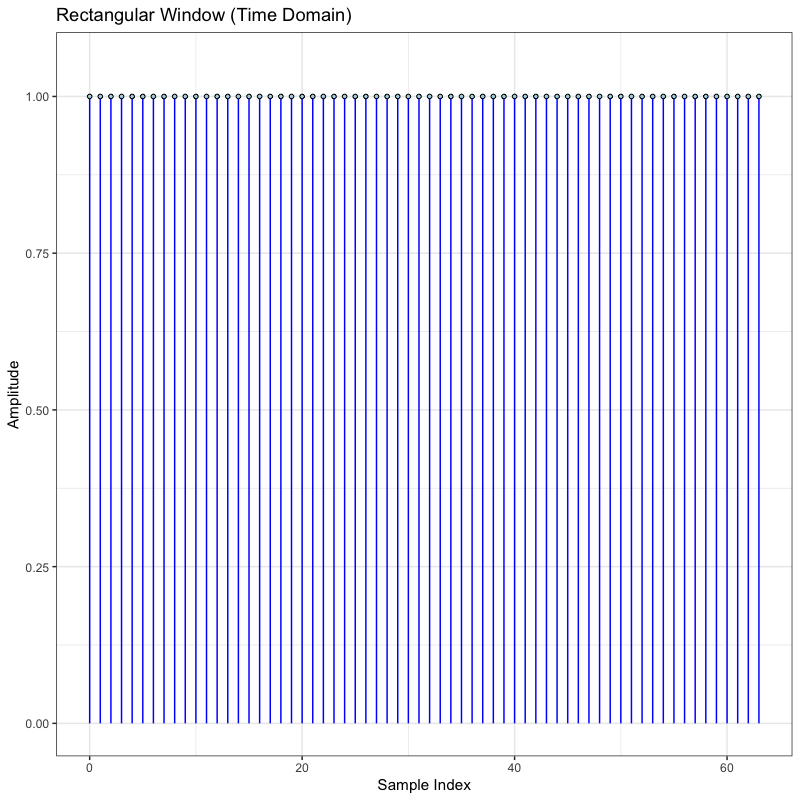
Figure 1: 矩形窓
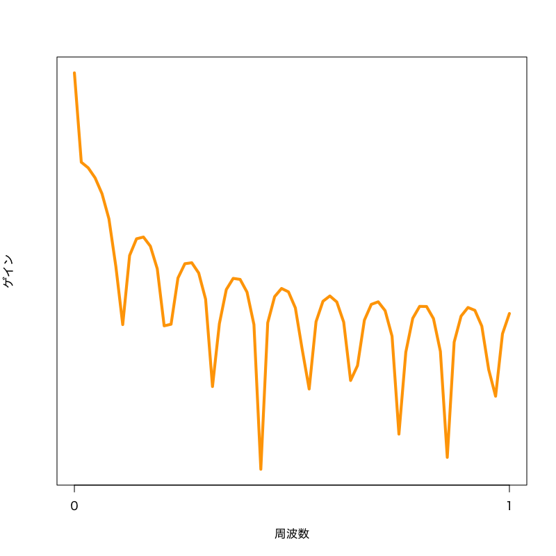
Figure 2: 周波数特性
\begin{equation} w(\tau)=e^{-\frac{(\tau-0.5)^{2}}{\sigma^{2}}} \end{equation}
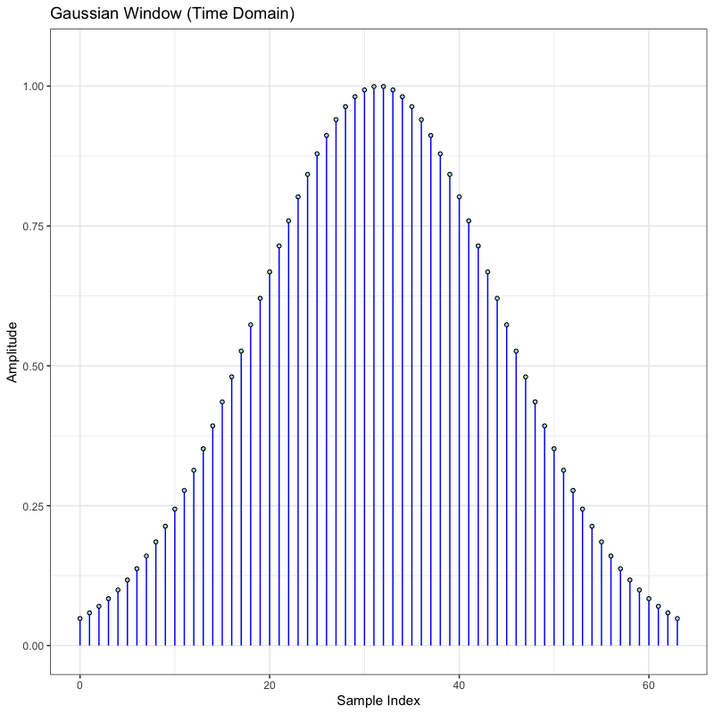
Figure 3: gauss 窓
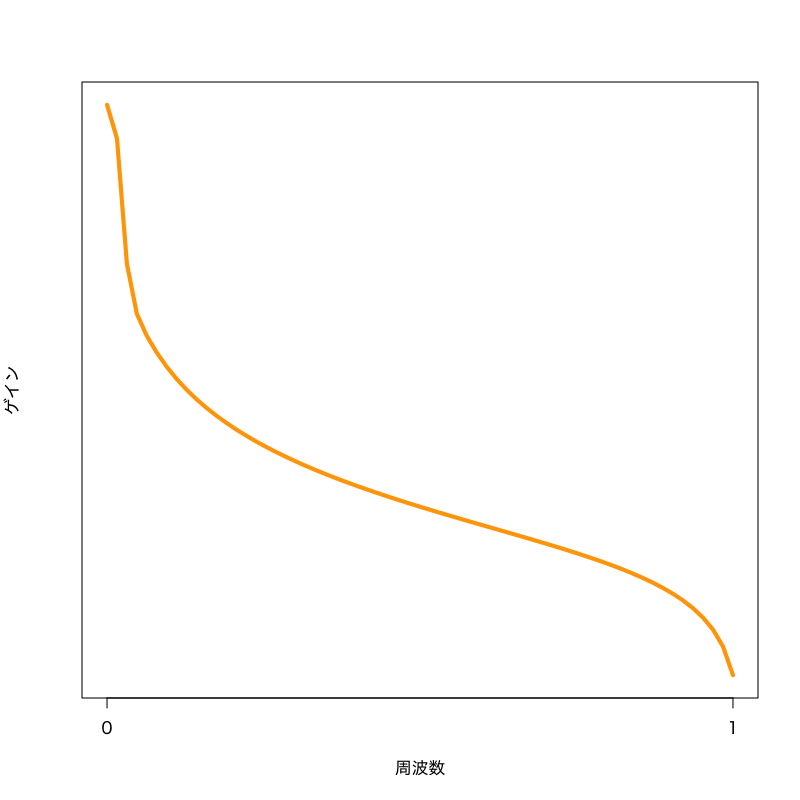
Figure 4: 周波数特性
\begin{equation} w(\tau)=0.5-0.5\cos(2\pi\tau) \end{equation}
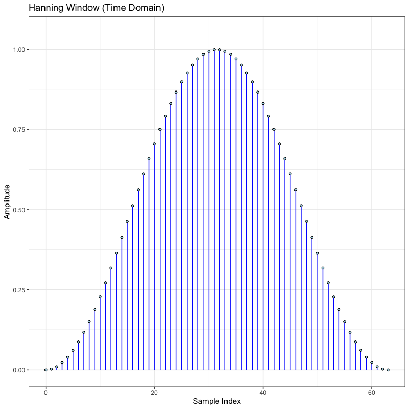
Figure 5: hann 窓
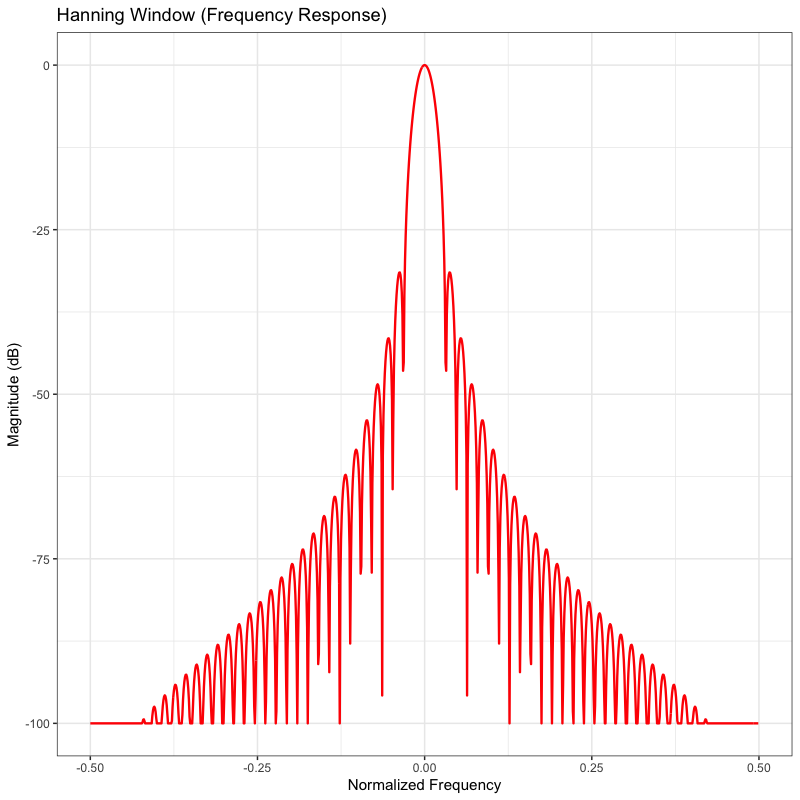
Figure 6: 周波数特性
\begin{equation} w(\tau)=0.54-0.46\cos(2\pi\tau) \end{equation}
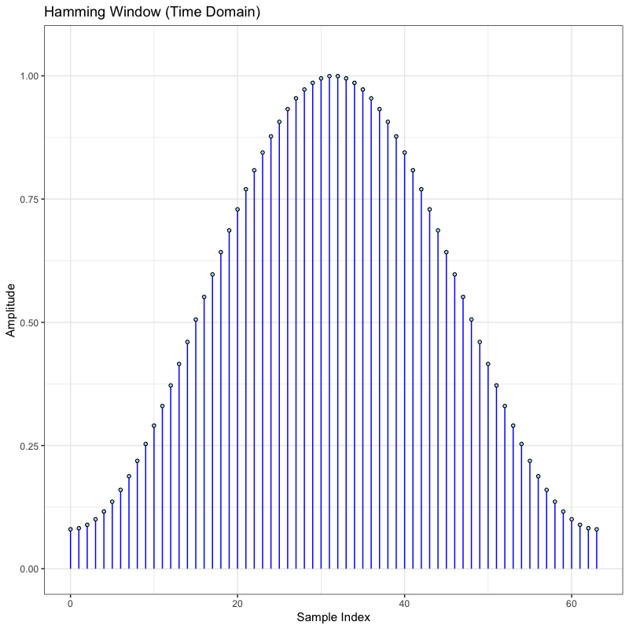
Figure 7: hamming 窓
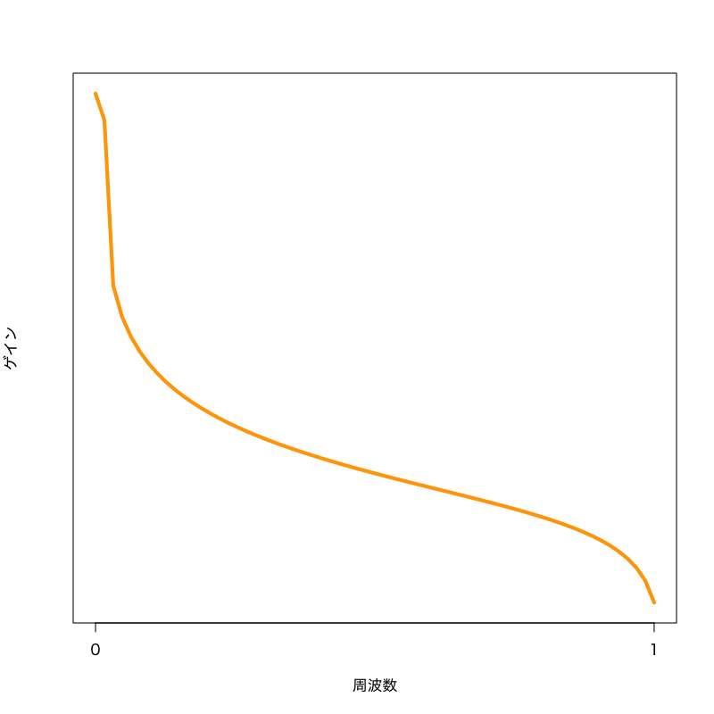
Figure 8: 周波数特性
Created by Noboru Murata | Licensed under CC BY-NC 4.0